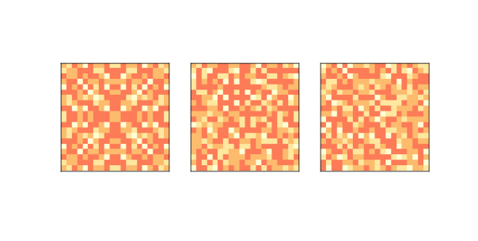
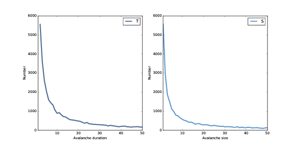
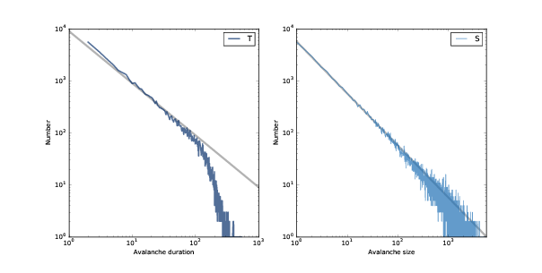
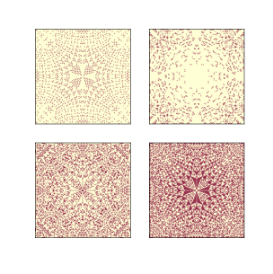
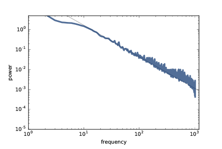

八、自组织临界
原文：Chapter 8 Self-organized criticality
译者：飞龙
自豪地采用谷歌翻译
在前一章中，我们看到了一个具有临界点的系统的例子，并且我们探索了临界系统 - 分形几何的一个共同特性。
在本章中，我们将探讨临界系统的另外两个性质：重尾分布，我们在第五章中见过，和粉红噪声，我将在本章中解释。
这些性质是部分有趣的，因为它们在自然界中经常出现；也就是说，许多自然系统会产生分形几何，重尾分布和粉红噪声。
这个观察提出了一个自然的问题：为什么许多自然系统具有临界系统的特性？一个可能的答案是自组织临界性（SOC），这是一些系统向临界状态演化并保持它的趋势。
在本章中，我将介绍沙堆模型，这是第一个展示 SOC 的系统。
本章的代码位于本书仓库的chap08.ipynb中。使用代码的更多信息，请参见第？章。
8.1 临界系统
许多临界系统表现出常见的行为：
分形几何：例如，冷冻的水倾向于形成分形图案，包括雪花和其他晶体结构。分形的特点是自相似性；也就是说，图案的一部分与整体的缩放副本相似。
一些物理量的重尾分布：例如，在冷冻的水中，晶体尺寸的分布是幂律的。
呈现粉红噪声的时间变化。复合信号可以分解为它们的频率分量。在粉红噪声中，低频分量比高频分量功率更大。具体而言，频率
f处的功率与1 / f成正比。
临界系统通常不稳定。例如，为了使水保持部分冷冻状态，需要主动控制温度。如果系统接近临界温度，则小型偏差倾向于将系统从一个相位移到另一个相位。
许多自然系统表现出典型的临界性行为，但如果临界点不稳定，它们本质上不应该是常见的。这是 Bak，Tang 和 Wiesenfeld 的解决的困惑。他们的解决方案称为自组织临界（SOC），其中“自组织”意味着从任何初始状态开始，系统都会转向临界状态，并停留在那里，无需外部控制。
8.2 沙堆
沙堆模型由 Bak，Tang 和 Wiesenfeld 于 1987 年提出。它不是一个现实的沙堆模型，而是一个抽象，它用（1）大量（2）与邻居互动的元素来模拟物理系统。
沙堆模型是一个二维细胞自动机，每个细胞的状态代表沙堆的部分斜率。在每个时间步骤中，检查每个细胞来查看它是否超过临界值K，通常是 3。如果是，则它会“倒塌”并将沙子转移到四个相邻细胞；也就是说，细胞的斜率减少 4，并且每个邻居增加 1。在网格的周边，所有细胞保持为斜率 0，所以多余的会溢出边缘。
Bak，Tang 和 Wiesenfeld 首先将所有细胞初始化为大于K的水平，然后运行模型直至稳定。然后他们观察微小扰动的影响；他们随机选择一个细胞，将其值增加 1，然后再次运行模型，直至稳定。
对于每个扰动，他们测量T，这是沙堆稳定所需的时间步数，S是倒塌的细胞总数 [1]。
[1] 原始论文使用了
S的不同定义，但是后来的工作使用了这个定义。
大多数情况下，放置一粒沙子不会导致细胞倒塌，因此T = 1和S = 0。 但偶尔一粒沙子会引起雪崩，影响很大一部分网格。 结果表明，T和S的分布是重尾的，这支持了系统处于临界状态的断言。
他们得出结论：沙堆模型表现出“自组织临界性”，这意味着从最初的状态开始，它不需要外部控制，或者称之为“微调”任何参数，就可以向临界状态发展。 随着更多沙粒的添加，模型仍处于临界状态。
在接下来的几节中，我复制他们的实验并解释结果。
8.3 实现沙堆
为了实现沙堆模型，我定义了一个名为SandPile的类，该类继承自Cell2D.py中定义的Cell2D。
class SandPile(Cell2D):
def __init__(self, n, m, level=9):
self.array = np.ones((n, m)) * level
数组中的所有值都初始化为level，这通常大于倒塌阈值K。
以下是step方法，它找到大于K的所有细胞并将它们推翻：
kernel = np.array([[0, 1, 0],
[1,-4, 1],
[0, 1, 0]], dtype=np.int32)
def step(self, K=3):
toppling = self.array > K
num_toppled = np.sum(toppling)
c = correlate2d(toppling, self.kernel, mode='same')
self.array += c
return num_toppled
为了解释这是如何工作的，我将从一小堆开始，只有两个准备推翻的细胞：
pile = SandPile(n=3, m=5, level=0)
pile.array[1, 1] = 4
pile.array[1, 3] = 4
最初，pile.array是这样：
[[0 0 0 0 0]
[0 4 0 4 0]
[0 0 0 0 0]]
现在我们可以选择高于倒塌阈值的细胞：
toppling = pile.array > K
结果是一个布尔数组，但是我们可以像整数数组一样使用它：
[[0 0 0 0 0]
[0 1 0 1 0]
[0 0 0 0 0]]
如果我们关联这个数组和核起来，它会在每个toppling是 1 的地方复制这个核。
c = correlate2d(toppling, kernel, mode='same')
这就是结果：
[[ 0 1 0 1 0]
[ 1 -4 2 -4 1]
[ 0 1 0 1 0]]
注意，在核的副本重叠的地方，它们会相加。
这个数组包含每个细胞的改变量，我们用它来更新原始数组：
pile.array += c
这就是结果：
[[0 1 0 1 0]
[1 0 2 0 1]
[0 1 0 1 0]]
这就是step的工作原理。
默认情况下，correlate2d认为数组的边界固定为零，所以任何超出边界的沙粒都会消失。
SandPile还提供了run，它会调用step，直到没有更多的细胞倒塌：
def run(self):
total = 0
for i in itertools.count(1):
num_toppled = self.step()
total += num_toppled
if num_toppled == 0:
return i, total
返回值是一个元组，其中包含时间步数和倒塌的细胞总数。
如果你不熟悉itertools.count，它是一个无限生成器，它从给定的初始值开始计数，所以for循环运行，直到step返回 0。
最后，drop方法随机选择一个细胞并添加一粒沙子：
def drop(self):
a = self.array
n, m = a.shape
index = np.random.randint(n), np.random.randint(m)
a[index] += 1
让我们看一个更大的例子，其中n=20：
pile = SandPile(n=20, level=10)
pile.run()

图 8.1：沙堆模型的初始状态（左），和经过 200 步（中）和 400 步（右）之后的状态
初始级别为 10 时，这个沙堆需要 332 个时间步才能达到平衡，共有 53,336 次倒塌。 图？（左）展示了初始运行后的状态。 注意它具有重复元素，这是分形特征。 我们会很快回来的。
图？（中）展示了在将 200 粒沙子随机放入细胞之后的沙堆构造，每次都运行直至达到平衡。 初始状态的对称性已被打破；状态看起来是随机的。
最后图？（右）展示了 400 次放置后的状态。 它看起来类似于 200 次之后的状态。 事实上，这个沙堆现在处于稳定状态，其统计属性不会随着时间而改变。 我将在下一节中解释一些统计属性。
8.4 重尾分布
如果沙堆模型处于临界状态，我们希望为一些数量找到重尾分布，例如雪崩的持续时间和大小。 所以让我们来看看。
我会生成一个更大的沙堆，n = 50，初始水平为 30，然后运行直到平衡状态：
pile2 = SandPile(n=50, level=30)
pile2.run()
下面我们会运行 100,000 个随机放置。
iters = 100000
res = [pile2.drop_and_run() for _ in range(iters)]
顾名思义，drop_and_run调用drop和run，并返回雪崩的持续时间和倒塌的细胞总数。
所以res是(T, S)元组的列表，其中T是持续时间，以时间步长为单位，并且S是倒塌的细胞。 我们可以使用np.transpose将res解构为两个 NumPy 数组：
T, S = np.transpose(res)
大部分放置的持续时间为 1，没有倒塌的细胞，所以我们会将这些过滤掉。
T = T[T>1]
S = S[S>0]
T和S的分布有许多小值和一些非常大的值。 我将使用thinkstats2中的Hist类创建值的直方图; 即每个值到其出现次数的映射。
from thinkstats2 import Hist
histT = Hist(T)
histS = Hist(S)

图 8.2：雪崩持续时间（左）和大小（右）的分布，线性刻度。

图 8.3：雪崩持续时间（左）和大小（右）的分布，双对数刻度。
图？显示了值小于 50 的结果。但正如我们在第？节中看到的那样，我们可以通过将它们绘制在双对数坐标上，更清楚地了解这些分布，如图？所示。
对于 1 到 100 之间的值，分布在双对数刻度上几乎是直的，这表示了重尾。 图中的灰线斜率为 -1，这表明这些分布遵循参数为α=1的幂律。
对于大于 100 的值，分布比幂律模型下降更快，这意味着较大值比模型的预测更少。 一种解释是，这种效应是由于沙堆的有限尺寸造成的，因此我们可能预计，更大的沙堆能更好地拟合幂律。
另一种可能性是，这些分布并不严格遵守幂律，你可以在本章结尾的一个练习中探索。 但即使它们不是幂律分布，它们仍然是重尾的，因为我们预计系统处于临界状态。
8.5 分形
临界系统的另一个属性是分形几何。 图中的初始状态 （左）类似于分形，但是你不能总是通过观察来分辨。 识别分形的更可靠的方法是估计其分形维度，正如第？节那样。
我首先制作一个更大的沙堆，n = 131，初始水平为 22。
pile3 = SandPile(n=131, level=22)
pile3.run()
顺便说一下，这个沙堆达到平衡需要 28,379 步，超过 2 亿个细胞倒塌。
为了更清楚地看到生成的团，我选择水平为 0, 1, 2 和 3 的细胞，并分别绘制它们：
def draw_four(viewer, vals=range(4)):
thinkplot.preplot(rows=2, cols=2)
a = viewer.viewee.array
for i, val in enumerate(vals):
thinkplot.subplot(i+1)
viewer.draw_array(a==vals[i], vmax=1)
draw_four需要SandPileViewer对象，它在Sand.py中定义。 参数vals是我们想要绘制的值的列表; 默认值是 0, 1, 2 和 3。
以下是它的使用方式：
viewer3 = SandPileViewer(pile3)
draw_four(viewer3)

图 8.4：沙堆模型的初始状态，从上到下，从左到右选择水平为 0, 1, 2 和 3 的细胞。
图？展示了结果。 现在对于这些图案中的每一个，我们都可以使用方框计数算法来估计分形维数：我们将计算沙堆中心的小方框中的细胞数量，然后看看细胞数量随着方框变大而如何增加。 这是我的实现：
def count_cells(a):
n, m = a.shape
end = min(n, m)
res = []
for i in range(1, end, 2):
top = (n-i) // 2
left = (m-i) // 2
box = a[top:top+i, left:left+i]
total = np.sum(box)
res.append((i, i**2, total))
return np.transpose(res)
参数a是 NumPy 布尔数组，值为 0 和 1。 方框的大小最初为 1，每次循环中，它会增加 2，直到到达终点，它是n和m中较小的一个。
每次循环中，box都是一组宽度和高度为i的细胞，位于数组中心。 total是方框中“开”细胞的数量。
结果是一个元组列表，其中每个元组包含i和i ** 2，用于比较，以及方框中的细胞数量。
最后，我们使用np.transpose生成一个 NumPy 数组，其中包含i，i ** 2和total。
为了估计分形维度，我们提取行：
steps, steps2, cells = res
之后绘制结果：
thinkplot.plot(steps, steps2, linestyle='dashed')
thinkplot.plot(steps, cells)
thinkplot.plot(steps, steps, linestyle='dashed')
然后使用linregress在双对数刻度上拟合直线：
from scipy.stats import linregress
params = linregress(np.log(steps), np.log(cells))
slope = params[0]

图 8.5：与斜率位 1 和 2 的虚线相比，水平为 0, 1, 2 和 3 的细胞的方框计数。
图？展示了结果。 请注意，只有val = 2（左下）从方框大小 1 开始，因为中心细胞的值为 2；其他直线从包含非零细胞数的第一个方框大小开始。
在双对数刻度上，细胞计数几乎形成直线，这表明我们正在测量方框大小的有效范围内的分形维度。
估计的分形维度是：
0 1.871
1 3.502
2 1.781
3 2.084
值为 0, 1 和 2 的分形维度似乎明显不是整数，这表明图像是分形的。
严格来说，值为 3 的分形维度与 2 不可区分，但考虑到其他值的结果，线的表观曲率和图案的外观，似乎它也是分形的。
本章结尾的练习之一，要求你使用不同的n和level值，再次运行此分析，来查看估计的维度是否一致。
8.6 频谱密度
提出沙堆模型的原始论文的标题是《自组织临界：1/f 噪声的解释》（Self-Organized Criticality: An Explanation of 1/f Noise）。 正如小标题所述的那样，Bak，Tang 和 Wiesenfeld 正试图解释为什么许多自然和工程系统表现出 1/f 噪声，这也被称为“闪烁噪声”和“粉红噪声”。
为了了解粉红噪声，我们必须绕路来了解信号，频谱分析和噪声。
信号：
信号是随时间变化的任何数量。 一个例子是声音，即空气密度的变化。 在本节中，我们将探讨雪崩持续时间和大小在不同时间段内的变化。
频谱分析：
任何信号都可以分解为一组具有不同音量或功率的频率分量。 例如，演奏中央 C 上方的 A 的小提琴的声音，包含频率为 440 Hz 的主要分量，但它也包含较低功率分量，例如 880 Hz，1320 Hz 和其他整数倍的基频。 频谱分析是寻找构成信号的成分和它们的功率的过程，称为其频谱。
噪声：
在通常的用法中，“噪声”通常是一种不需要的声音，但在信号处理的情况下，它是一个包含许多频率成分的信号。
噪声有很多种。 例如，“白噪声”是一个信号，它在很宽的频率范围内拥有相同功率的成分。
其他种类的噪声在频率和功率之间有不同的关系。 在“红噪声”中，频率为f的功率为1 / f ** 2，我们可以这样写：
P(f) = 1 / f ** 2
我们可以把指数 2 换成β来扩展它：
P(f) = 1 / f ** β
当β= 0时，该等式描述白噪声; 当β= 2时，它描述红噪声。 当参数接近 1 时，我们将结果称为1 / f噪声。 更一般来说，任何介于 0 和 2 之间的噪声称为“粉红”，因为它介于白色和红色之间。
那么这如何适用于沙堆模型呢？ 假设每次细胞倒塌时，它会发出声音。 如果我们在运行中记录了沙堆模型，它会是什么样子？
在我的SandPile实现运行时，它会记录在每个时间步骤中，倒塌的细胞数量，并将结果记录在名为toppled_seq的列表中。 例如，在第？节中运行模型之后，我们可以提取产生的信号：
signal = pile2.toppled_seq
为了计算信号的频谱（同样，这是它包含的频率和它们的功率），我们可以使用快速傅立叶变换（FFT）。
唯一的问题是噪声信号的频谱往往是嘈杂的。 但是，我们可以通过将一个长信号分成多个段，计算每个段的 FFT，然后计算每个频率的平均功率来使其平滑。
该算法的一个版本被称为“韦尔奇方法”，SciPy 提供了一个实现。 我们可以像这样使用它：
from scipy.signal import welch
nperseg = 2048
freqs, spectrum = welch(signal, nperseg=nperseg, fs=nperseg)
nperseg是信号分解成的片段长度。 对于较长的片段，我们可以获得更多的频率成分，但由于平均的片段数较少，结果更加嘈杂。
fs是“采样频率”，即每单位时间的信号中的数据点数。 通过设置fs = nperseg，我们可以得到从 0 到nperseg / 2的频率范围，但模型中的时间单位是任意的，所以频率并不意味着什么。
返回值，freqs和powers是 NumPy 数组，包含成分的频率及其相应的功率。
如果信号是粉红噪声，我们预计：
P(f) = 1 / f ** β
对两边取对数会得到：
logP(f) = −β logf
所以如果我们在双对数刻度上绘制功率与频率的关系，我们预计有一条斜率为β的直线。

图 8.6：随着时间推移的倒塌细胞的功率频谱，双对数刻度
图？显示结果。 对于 10 到 1000 之间的频率（以任意单位），频谱落在一条直线上。 灰线斜率为 -1.58，这对应于由 Bak，Tang 和 Wiesenfeld 报告的参数β= 1.58。
这个结果证实了沙堆模型产生粉红噪声。
8.7 还原论与整体论
Bak，Tang 和 Wiesenfeld 的原始论文是过去几十年中被引用次数最多的论文之一。 其他系统已被证明是自组织临界，特别是沙堆模型已被详细研究。
事实证明，沙堆模型并不是一个很好的沙堆模型。 沙子密集且不太粘，所以动量对雪崩的行为有着不可忽视的影响。 因此，与模型预测的相比，非常大和非常小的雪崩数量更少，并且分布可能不是重尾。
Bak 建议，这个观察没有考虑到这一点。 沙堆模型并是现实的沙堆模型；它旨在成为一大类系统的简单模型。
为了理解这个要点，考虑两种模式，还原论和整体论，会有帮助。 还原论模型通过描述系统的各个部分及其相互作用来描述系统。 当还原论模型用于解释时，它取决于模型和系统组成部分之间的类比。
例如，为了解释为什么理想气体定律成立，我们可以用点质量模拟组成气体的分子，并将它们的相互作用建模为弹性碰撞。 如果你模拟或分析这个模型，你会发现它服从理想的气体定律。 一定程度上，该模型满足了，气体中的分子表现为模型中分子。 类比位于系统的各个部分和模型的各个部分之间。

图 8.7：还原论模型的逻辑结构
整体论模型更关注系统之间的相似性，而对类比部分不太感兴趣。 整体论建模方法通常由两个步骤组成，不一定按以下顺序：
- 识别出现在各种系统中的一种行为。
- 寻找证明这种行为的简单模型。
例如，在《自私的基因》（The Selfish Gene）中，理查德道金斯（Richard Dawkins）认为，遗传进化只是进化系统的一个例子。 他确定了这些类别的基本元素 - 离散复制器（discrete replicator），可变性和差异生殖（differential reproduction） - 并提出任何包含这些元素的系统都会显示类似的行为，包括不带设计的复杂性。
作为演化系统的另一个例子，他提出了“模因”（memes），即通过人与人之间的传播而复制的思想或行为 [2]。 由于模因争夺人类的注意力的资源，它们的演变方式与遗传进化相似。
[2] “模因”的用法源自 Dawkins，并且早于 20 年前这个词在互联网上的衍生用法。
模因模型的批评者指出，模因是基因的一个很差的类比。 模因在许多方面与基因不同。 但道金斯认为，这些差异并不重要，因为模因不可能与基因类似。 相反，模因和基因是同一类别的例子：进化系统。 它们之间的差异强调了真正的观点，即进化是一个适用于许多看似不同的系统的通用模型。 图？显示了这个论述的逻辑结构。
Bak 也提出了类似的观点，即自组织临界性是一大类系统的通用模型：
由于这些现象无处不在，它们不能依赖于任何具体的细节......如果一大类问题的物理结果是相同的，这为【理论家】提供了选项，选择属于该类的最简单的可能的【模型】，来进行详细的研究 [3]。
[3] Bak, How Nature Works, Springer-Verlag 1996, page 43.
许多自然系统表现出临界系统的行为特征。 Bak 对这种普遍性的解释是，这些系统是自组织临界性的示例。 有两种方式可以支持这个论点。 一个是建立一个特定系统的现实模型，并显示该模型表现出 SOC。 其次是证明 SOC 是许多不同模型的一个特征，并确定这些模型共同的基本特征。
第一种方法我称之为还原论，可以解释特定系统的行为。 第二种是整体论的方法，解释了自然系统中临界性的普遍性。 他们是不同目的的不同模型。
对于还原论模型，现实主义是主要优点，简单性是次要的。 对于整体模型，这是相反的。
8.8 SOC，因果和预测
如果股市指数在一天内下跌一个百分点，则不需要解释。 但如果它下降 10%，人们想知道为什么。 电视上的专家愿意提供解释，但真正的答案可能是没有解释。
股票市场的日常变化展示了临界性的证据：数值变化的分布是重尾的，时间序列表现出粉红噪音。 如果股票市场是一个临界系统，我们应该预计，偶尔的巨大变化是市场普通行为的一部分。
地震强度的分布也是重尾的，并且存在可能解释这种行为的，地质断层动力学的简单模型。 如果这些模型是正确的，那就意味着大地震是普遍的； 也就是说，与小地震相比，他们不需要更多解释。
同样，查尔斯·佩罗（Charles Perrow）认为，像核电厂这样的大型工程系统的故障，就像沙堆模型中的雪崩一样。 大多数故障是小的，孤立的和无害的，但偶尔坏运气的巧合会产生灾难。 当发生重大事故时，调查人员会去寻找原因，但如果佩罗的“正常事故理论”是正确的，那么可能没有特殊原因导致严重故障。
这些结论并不令人欣慰。 除其他事情外，它们意味着大地震和某些事故从根本上是不可预测的。不可能观察临界系统的状态，并说大雪崩是否“来临”。 如果系统处于临界状态，则总是可能发生大型雪崩。 它只取决于下一粒沙子。
在沙堆模型中，大雪崩的原因是什么？哲学家有时会将直接（proximate）原因与根本（ultimate）原因区分开来，前者是最直接的原因，无论出于何种原因，后者被视为真正的原因。
在沙堆模型中，雪崩的直接原因是一粒沙子，但引起大雪崩的沙粒与其他沙粒相同，所以它没有提供特别的解释。大雪崩的根本原因是整个系统的结构和动态：大雪崩的发生是因为它们是系统的一个属性。
许多社会现象，包括战争，革命，流行病，发明和恐怖袭击，其特点是重尾分布。如果这些分布的原因是社会系统是临界的，那么这表明主要的历史事件可能从根本上是不可预测的，并且无法解释。
8.9 练习
练习 1
本章的代码位于本书仓库中的 Jupyter 笔记本chap08.ipynb中。打开这个笔记本，阅读代码，然后运行单元格。你可以使用这个笔记本来练习本章的练习。我的解决方案在chap08soln.ipynb中。
练习 2
为了检验T和S的分布是否是重尾的，我们将它们的直方图绘制在双对数刻度上，这就是 Bak，Tang 和 Wiesenfeld 在他们的论文中所展示。但我们在第？节中看到，这种可视化可能掩盖分布的形状。使用相同的数据，绘制一个图表，显示S和T的累积分布（CDF）。对于他们的形状你可以说什么？他们是否遵循幂律？他们是重尾的嘛？
你可能会发现将 CDF 绘制在对数和双对数刻度上会有所帮助。
练习 3
在第？章，我们发现沙堆模型的初始状态会产生分形图案。但是在我们随机放置了大量的沙粒之后，图案看起来更随机。
从第？章中的示例开始，运行沙堆模型一段时间，然后计算 4 个水平中的每个的分形维度。沙堆模型是否处于稳定状态？
练习 4
另一种沙堆模型，称为“单一来源”模型，从不同的初始条件开始：中心细胞设为较大值，除了中心细胞，所有细胞设为 0，而不是所有细胞都是同一水平的。编写一个创建SandPile对象的函数，设置单一来源的初始条件，并运行，直到达到平衡。结果出现了分形吗？
你可以在 http://math.cmu.edu/~wes/sandgallery.html 上了解这个版本的沙堆模型。
练习 5
在 1989 年的一篇论文中，Bak，Chen 和 Creutz 认为生命游戏是一个 SOC 系统 [5]。
[5] “Self-organized criticality in the Game of Life”，可以在这里获取：http://www.nature.com/nature/journal/v342/n6251/abs/342780a0.html。
为了复制他们的测试，运行 GoL CA 直到稳定，然后随机选择一个细胞并翻转它。运行 CA 直到它再次稳定下来，跟踪T，这个是它需要的时间步数，以及S，受影响的细胞数。重复进行大量试验并绘制T和S的分布。同时，记录在每个时间步骤中改变状态的细胞数量，并查看得到的时间序列是否与粉红噪声相似。
练习 6
在《自然界的分形几何》（The Fractal Geometry of Nature）中，Benoit Mandelbrot 提出了自然系统中重尾分布的普遍性的解释，他称之为“异端”。 正如 Bak 所言，许多系统可以独立产生这种行为。 相反，它们可能只是少数，但系统之间可能会有交互，它们导致行为的传播。
为了支持这个论点，Mandelbrot 指出：
- 观测数据的分布通常是“一个固定的底层真实分布，和一个高度可变的过滤器的联合效应”。
- 重尾分布对于过滤器是健壮的；也就是说，“各种过滤器使其渐近行为保持不变”。
你怎么看待这个观点？ 你会把它描述为还原论还是整体论？
练习 7
在 http://en.wikipedia.org/wiki/Great_man_theory 上阅读“伟人”的历史理论。 自组织临界对这个理论有什么暗示？